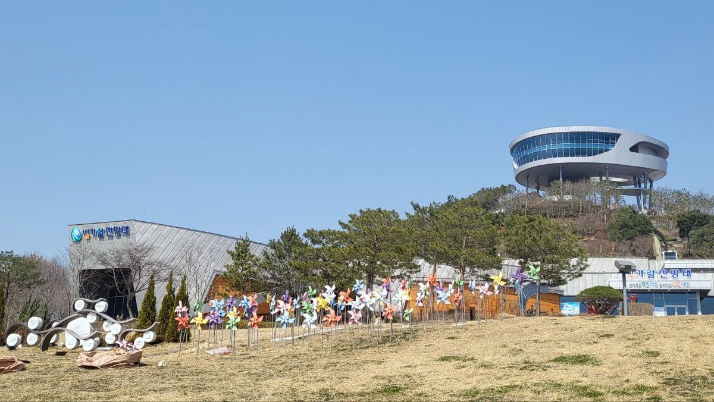

최종웅 인코어드 대표, 나주 포럼서 분산형 전력체계 전환 제언…미국 CCA 들며 지역 전력 수익 주민과 나누자

발전공기업 통합본사 나주 유치 조건으로 지역 생산·소비 체계 꼽아…계통 지속 운전·블랙스타트·그리드포밍 기술과 충분한 ESS, 마이크로그리드 네트워크 필요하다는 기조강연
발전공기업 5사의 통합본사를 나주에 유치하려면 송전망에 기대는 중앙집중식 전력체계에서 벗어나 지역에서 전기를 만들고 쓰는 분산형 체계로 바꿔야 한다는 제언이 28일 나주에서 열린 '미지답(우리의 미래, 지방에 답이 있다) 전남광주 포럼'에서 나왔다. 전 LS산전 사장인 최종웅 인코어드 대표는 나주시 빛가람동 복합문화체육센터에서 '에너지 혁신: 전력의 지역균형발전에서부터'를 주제로 한 기조강연에서, 송전망을 새로 짓는 데 오랜 시간과 큰 비용이 들고 주민 갈등도 생기는 만큼 지역에서 만든 전력을 그 지역에서 소비하는 체계를 갖춰야 한다고 말했다. 그는 회전 관성이 없는 태양광 같은 재생에너지가 전압·주파수 변동에 약할 수 있다며, 망에 사고가 나도 운전을 이어 가는 계통 지속 운전, 정전 뒤 망을 되살리는 블랙스타트, 전압·주파수를 스스로 만드는 그리드포밍 기술을 확보해야 한다고 했다. 최 대표는 나주의 태양광 발전 가능 시간이 약 4.5시간으로 수도권·경상도(약 3.8시간)보다 길다고 소개하면서도 해가 없는 시간에 대비해 에너지저장장치(ESS)를 충분히 갖추고, 작은 전력망들을 서로 잇는 마이크로그리드 네트워크로 지역끼리 모자란 전력을 메워야 한다고 제안했다. 이어 미국의 지역사회 전력구매제도인 CCA(Community Choice Aggregation)를 예로 들며, 지역에서 만든 전기를 저장해 싸게 팔고 그 수익을 주민과 나누는 제도가 필요하다고 강조했다. 이날 제언은 강연자 개인의 의견으로, 정부나 전남광주통합특별시가 이를 정책으로 검토하겠다는 발표는 없었다.
시민에너지 관점
CCA는 지방정부가 주민을 대신해 전기를 모아 사들이고 전선은 기존 전력회사가 계속 운영하는 제도로, 캘리포니아에서는 2010년 마린카운티의 MCE(마린클린에너지)가 첫 CCA로 문을 열었다. 한국은 한전이 전기 판매를 도맡고 있어 CCA를 그대로 옮기기 어렵다는 반론이 나올 수 있지만, 그렇기에 판매 경쟁보다 먼저 지역에서 만든 전기와 저장장치를 누가 소유하고 그 수익이 어디로 가는지부터 제도로 정하는 것이 순서다. 지방정부가 대신 사 주는 데서 멈추면 주민은 여전히 소비자에 머물지만, 주민과 협동조합이 마을 발전소와 ESS의 주인이 되면 송전망 갈등을 줄이는 분산형 전원이 곧 지역의 소득이 된다. 발전공기업 통합본사 유치를 말하는 전남광주라면, 본사 건물보다 먼저 주민이 소유하는 분산형 전원과 그 수익 공유 방식을 유치 계획에 담아야 한다.
출처: 한국일보 2026-10-28 김혜지 원문 보기
チェ・ジョンウン・エンコアード代表、羅州のフォーラムで分散型電力システムへの転換を提言…米国のCCAを例に地域電力の収益を住民と分かち合おうと訴え
発電公企業の統合本社を羅州に誘致する条件として地域で生産・消費する体制を挙げる…系統連続運転・ブラックスタート・グリッドフォーミング技術と十分なESS、マイクログリッドのネットワークが必要とする基調講演
発電公企業5社の統合本社を羅州に誘致するには、送電網に頼る中央集中型の電力システムから抜け出し、地域で電気をつくって使う分散型のシステムに切り替えるべきだという提言が、28日に羅州で開かれた「未地答（私たちの未来、地方に答えがある）全南光州フォーラム」で出された。元LS産電社長のチェ・ジョンウン・エンコアード代表は、羅州市ピッカラム洞の複合文化体育センターで「エネルギー革新：電力の地域均衡発展から」をテーマに行った基調講演で、送電網の新設には長い時間と大きな費用がかかり住民との対立も生じるため、地域でつくった電力をその地域で消費する体制を整えるべきだと述べた。チェ代表は、回転による慣性を持たない太陽光などの再生可能エネルギーは電圧や周波数の変動に弱い場合があるとして、系統で事故が起きても運転を続ける系統連続運転、停電後に電力網を復旧させるブラックスタート、電圧と周波数を自ら形成するグリッドフォーミングの技術を確保する必要があると語った。また、羅州で太陽光発電が可能な時間は約4.5時間で首都圏や慶尚道（約3.8時間）より長いと紹介しつつも、日が出ていない時間に備えてエネルギー貯蔵装置（ESS）を十分に備え、小規模な電力網同士をつなぐマイクログリッドのネットワークで地域間の電力不足を補うべきだと提案した。さらに米国の地域社会電力購入制度であるCCA（Community Choice Aggregation）を例に挙げ、地域でつくった電気を蓄えて安く販売し、その収益を住民と分かち合う制度が必要だと強調した。この日の提言は講演者個人の意見であり、政府や全南光州統合特別市がこれを政策として検討するという発表はなかった。
市民エネルギーの視点
CCAは地方政府が住民に代わって電気をまとめて購入し、電線は既存の電力会社が引き続き運営する制度で、カリフォルニア州では2010年にマリン郡のMCE（マリン・クリーン・エナジー）が最初のCCAとして事業を始めた。韓国では韓国電力が電気の販売を一手に担っているためCCAをそのまま持ち込むのは難しいという反論もあり得るが、だからこそ販売の競争より先に、地域でつくった電気と貯蔵装置を誰が所有し、その収益がどこへ行くのかを制度で定めるのが順序だ。地方政府が代わりに買うところで止まれば住民は相変わらず消費者にとどまるが、住民と協同組合が村の発電所とESSの持ち主になれば、送電網をめぐる対立を減らす分散型電源がそのまま地域の所得になる。発電公企業の統合本社誘致を掲げる全南光州であれば、本社の建物より先に、住民が所有する分散型電源とその収益の分かち合い方を誘致計画に盛り込むべきだ。
出典: 韓国日報 2026-10-28 金ヘジ 原文を読む
Encored代表Choi Jong-woong在罗州论坛上建议转向分布式电力体系…以美国CCA为例主张与居民分享地方电力收益
把就地生产、就地消费的体系列为发电公企业合并总部落户罗州的条件…主旨演讲称需要电网持续运行、黑启动、构网型技术以及充足的储能和微电网网络
28日在罗州举行的"未地答（我们的未来，答案在地方）全南光州论坛"上有人提出，要让发电公企业5家公司的合并总部落户罗州，就应摆脱依赖输电网的集中式电力体系，转向在地方发电、在地方用电的分布式体系。曾任LS产电社长的Encored代表Choi Jong-woong在罗州市光佳览洞综合文化体育中心以"能源创新：从电力的地区均衡发展开始"为题发表主旨演讲时表示，新建输电网耗时长、成本高，还会引发与居民的矛盾，因此应建立让地方生产的电力在当地消费的体系。他说，光伏等可再生能源没有旋转惯量，可能难以承受电压和频率波动，因此需要掌握电网出现故障时设备仍能持续运行的技术、停电后恢复电网的黑启动技术，以及自行建立电压和频率的构网型技术。Choi Jong-woong介绍说，罗州可进行光伏发电的时间约为4.5小时，长于首都圈和庆尚道（约3.8小时），但他同时提出，应为没有日照的时段备足储能设施（ESS），并通过把小型电网相互连接起来的微电网网络，让各地区相互弥补电力缺口。他还以美国的社区电力集中采购制度CCA（Community Choice Aggregation）为例强调，需要建立把地方生产的电储存起来低价出售、并与居民分享收益的制度。当天的建议属于演讲者个人意见，政府或全南光州统合特别市并未宣布将其作为政策加以研究。
市民能源视角
CCA是由地方政府代替居民集中采购电力、电线仍由原有电力公司运营的制度；在加利福尼亚州，马林县的MCE（马林清洁能源）于2010年作为首个CCA开始运营。或许有人反驳说，韩国由韩国电力公社独揽售电，难以照搬CCA；但正因如此，比起售电竞争，更应先用制度明确地方生产的电力和储能设施归谁所有、收益流向哪里。如果止步于地方政府代为购电，居民仍只是消费者；而当居民和合作社成为村级电站和储能设施的主人时，减少输电网矛盾的分布式电源本身就会变成地方的收入。既然全南光州要争取发电公企业合并总部落户，就应在争取计划中先写入居民所有的分布式电源及其收益分享方式，而不只是总部大楼。
来源: 韩国日报 2026-10-28 Kim Hye-ji 查看原文
Encored CEO Choi Jong-woong urges a shift to a decentralised power system at a Naju forum, citing US CCAs to argue that local power income should be shared with residents
He named local generation and consumption as a condition for bringing the merged headquarters of the power generation companies to Naju; the keynote called for ride-through, black start and grid-forming technology, ample ESS and networked microgrids
A call to move away from a centralised power system that relies on transmission lines toward a decentralised one in which electricity is generated and used locally, as a condition for bringing the merged headquarters of the five state power generation companies to Naju, was made on the 28th at the "Mijidap (Our future, the answer lies in the regions) South Jeolla-Gwangju Forum" held in Naju. Choi Jong-woong, chief executive of Encored and a former president of LS Industrial Systems, said in a keynote titled "Energy innovation: starting from balanced regional development of power" at the cultural and sports complex in Bitgaram-dong, Naju, that because building new transmission lines takes a long time, costs a great deal and causes conflict with residents, the region needs a system in which power made locally is consumed locally. He said renewables such as solar, which lack rotating inertia, can be vulnerable to voltage and frequency swings, and that technologies are needed for fault ride-through, so that plants keep running when the grid has a fault, for black start, to restore the grid after an outage, and for grid forming, so that inverters set voltage and frequency themselves. Choi said the hours in which solar power can be generated are about 4.5 in Naju, longer than about 3.8 in the capital region and the Gyeongsang provinces, but proposed that the region still build enough energy storage systems (ESS) for hours without sun and a network of small interconnected grids, or microgrids, so that areas can cover one another's shortfalls. Citing Community Choice Aggregation (CCA) in the United States, he stressed the need for a system in which locally generated electricity is stored, sold cheaply and its income shared with residents. The proposals were the speaker's own views, and neither the government nor South Jeolla-Gwangju announced any plan to consider them as policy.
Citizen Energy View
Under CCA, local governments buy electricity in bulk on behalf of residents while the existing utility keeps running the wires, and in California the first CCA, MCE (Marin Clean Energy) in Marin County, began operating in 2010. Some will object that CCA cannot simply be transplanted to Korea, where KEPCO holds the monopoly on retail electricity sales, but that is exactly why the first step should be not retail competition but rules on who owns locally generated power and storage and where the income goes. If local governments stop at buying power on residents' behalf, residents remain mere consumers, whereas if residents and cooperatives own village power plants and ESS, the distributed generation that eases conflicts over transmission lines becomes local income in its own right. A South Jeolla-Gwangju that is campaigning for the merged headquarters of the power generation companies should write resident-owned distributed generation and a way of sharing its income into its bid before it plans the headquarters building.
Source: Hankook Ilbo 2026-10-28 Kim Hye-ji Read the original